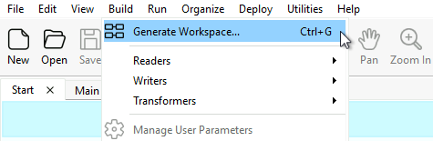
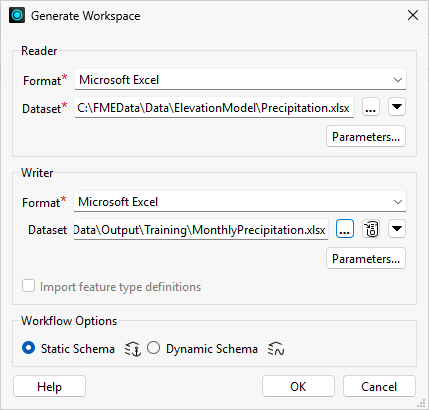
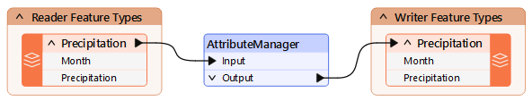
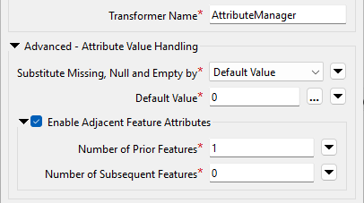
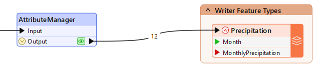
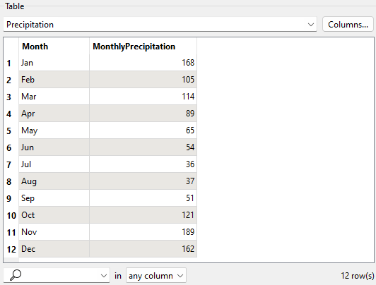

Learning Objectives
After completing this lesson, you’ll be able to:
- Expose adjacent feature attributes.
- Use adjacent feature attributes.
- Handle missing values in attribute manipulation.
Resources
- Complete workspace
- If you are taking a Safe Software-hosted training course: C:\FMEData\Workspaces\AdvancedDataTransformation\precipitation-calculations-with-adjacent-feature-attributes-complete.fmw
- Precipitation.xlsx
- C:\FMEData\Data\ElevationModel\Precipitation.xlsx
Exercise

Jennifer is mapping her city's monthly precipitation. She has been handed a dataset of cumulative rainfall totals, but she wants to map the individual figure for each month. She builds a workspace that reads the cumulative precipitation data and writes the monthly values to a new Excel file.
In this exercise, you will:
- Expose and use adjacent feature attributes to reference a previous feature's values.
- Handle missing values when a feature has no adjacent feature.
- Calculate each month's precipitation into a new attribute and write the results to Excel.
The precipitation data is cumulative and looks like this:
| Month |
Precipitation |
| Jan |
168 |
| Feb |
273 |
| Mar |
387 |
| Apr |
476 |
| May |
541 |
| Jun |
595 |
| Jul |
631 |
| Aug |
668 |
| Sep |
719 |
| Oct |
840 |
| Nov |
1029 |
| Dec |
1191 |
1) Create Workspace
This workspace uses an Excel reader for the source data and an Excel writer for the results.
- Start FME Workbench (2026.2 or later) and click Build > Generate Workspace.

- Set Reader Format to Microsoft Excel.
- Set Reader Dataset to C:\FMEData\Data\ElevationModel\Precipitation.xlsx.
- Set Writer Fromat to Microsoft Excel.
- Set Writer Dataset to C:\FMEData\Output\Training\MonthlyPrecipitation.xlsx.
- Click Parameters.
- Set Overwrite Existing File to Yes.
- Click OK.
- Set Workflow Options to Static Schema.

- Click OK.

2) Add AttributeManager
To calculate each month's precipitation, you subtract the previous month's cumulative total from the current month's total. FME's adjacent feature attribute functionality lets each feature fetch the previous month's value.
- Place an AttributeManager between the reader and writer feature types.

3) Enable Adjacent Feature Attributes
You enable adjacent feature attributes so each feature can reference the one processed before it. The first feature has no prior feature, so you also set a substitution value; because this calculation is numeric, 0 is a sensible default.
- Open the AttributeManager parameters.
- Expand Advanced: Attribute Value Handling.
- Enable Adjacent Feature Attributes.
- In Number of Prior Features, enter
1.
- Set Substitute Missing, Null, and Empty by to Default Value.
- In Default Value, enter
0.

4) Build the Precipitation Calculation
Now you build the expression that subtracts the previous feature's value from the current feature's value.
- In the Value field for the
Precipitation attribute, click empty cell, then click the drop-down and select Open Arithmetic Editor.

- In the Arithmetic Editor, use the menu on the left to build this expression:
- Select the FME Feature Attribute
Precipitation.
- Select the subtraction operator.
- Select the FME Feature Attribute
Precipitation for feature[-1].
- If you don't see the
feature[-1] options under FME Feature Attributes, confirm you completed the previous step, then click OK twice to close the AttributeManager and open it again.
- The completed expression is
@Value(Precipitation)-@Value(feature[-1].Precipitation).
- Without the substitution value set in the previous step, the result would be uncertain wherever
feature[-1].Precipitation is missing.

- Click OK to close the Arithmetic Editor, then accept the parameter changes.
5) Save and Run Workspace
When you run the workspace, the results start out correct but quickly go wrong, which reveals a problem with overwriting the attribute you are calculating from.
- Save the workspace, then run it.
- Inspect the output.
- The numbers start out correct but quickly become wrong.
- You cannot overwrite the attribute you are calculating from, because it skews the next calculation: the March calculation needs February's original value, but instead it receives the value you just overwrote.
- The solution is to write the result to a new attribute.
6) Create a New Output Attribute
To fix the calculation, you write the result to a new attribute called MonthlyPrecipitation instead of overwriting Precipitation.
- Double-click the Precipitation writer feature type to edit its parameters.
- On the User Attributes tab, change Attribute Definition from Automatic to Manual.
- Rename the destination attribute
Precipitation to MonthlyPrecipitation.
- Click OK.
- The new attribute name appears on the canvas if you have expanded the feature types to show attribute names.

- Return to the AttributeManager and configure a new attribute:
- Set the Output Attribute to
MonthlyPrecipitation.
- Set Action to Set Value.
- To save time, copy and paste the Value formula (copy the cell, not the entire row).
- Set the Action for the
Precipitation attribute to Do Nothing.
- Renaming
Precipitation will not work, because it still fetches the overwritten value; leave it unchanged and create the new attribute instead.

7) Re-Run Workspace
With the calculation writing to a new attribute, the monthly values should now be correct.
- Save the workspace.
- Before re-running, confirm the output file is not open in Excel or another editor.
- Run the workspace.
- Inspect the output.
- The numbers should now be correct.
- If the output values look like
273-168 or 387-273, you used the Text Editor instead of the Arithmetic Editor.
- If the values are all zero, confirm the AttributeManager action is set to Do Nothing for the
Precipitation attribute rather than Set Value.
